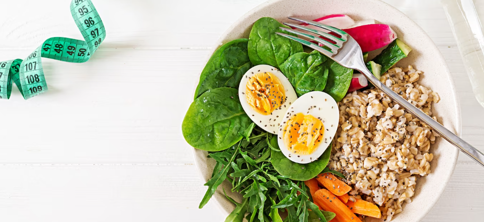

Uma alimentação saudável ajuda a proteger contra a má nutrição em todas as suas formas, bem como contra as doenças crônicas não transmissíveis, entre elas diabetes, doenças cardiovasculares, AVC e câncer. Práticas alimentares saudáveis começam cedo na vida. A amamentação, por exemplo, promove crescimento e melhora o desenvolvimento cognitivo. Além disso, pode ter benefícios a longo prazo para a saúde, reduzindo o risco de obesidade e de sobrepeso, bem como de desenvolvimento de DCNT. As gorduras saturadas devem representar menos de 10% da ingestão calórica total. O consumo de gorduras trans, por sua vez, deve ser inferior a 1% do consumo total. Para isso ser possível, o consumo de gorduras deveria ser modificado para reduzir as gorduras saturadas e trans para gorduras insaturadas, com o objetivo de eliminar a gordura trans produzida industrialmente. Limitar o consumo de açúcares livres para menos de 10% da ingestão calórica total faz parte de uma alimentação saudável. Uma redução adicional para menos de 5% é sugerida para benefícios adicionais à saúde.
O que é ter uma alimentação saudável
A alimentação saudável consiste no cardápio ou na dieta que prioriza os grupos alimentares que fazem bem para a saúde do ser humano, sendo:
frutas;
Ao mesmo tempo, devemos minimizar o consumo de alimentos relacionados a doenças como diabetes, hipertensão, complicações cardiovasculares. Alguns desses alimentos são:
aqueles açucarados artificialmente;
A alimentação saudável também envolve a variedade de grupos alimentares, a diversificação dos pratos consumidos e a constância ideal das refeições. Pode envolver, ainda, o balanceamento do teor nutricional das refeições, de acordo com a necessidade de cada pessoa. Indo um pouco mais além, para se alimentar de uma forma saudável é importante considerar as características da pessoa, como peso, faixa etária, atividades rotineiras, problemas preexistentes, e assim por diante. Para isso, é válido consultar um nutricionista ou um nutrólogo, profissionais especializados nessa área.
Benefícios que faz ter uma boa alimentação

FORTALECIMENTO DA IMUNIDADE
Quando nos alimentamos bem, nosso sistema de defesa fica preparado e alerta. Assim, consegue combater com mais eficiência os agentes patógenos como vírus e bactérias que invadem o organismo. Com isso, evitamos uma série de doenças.
SUFICIÊNCIA NUTRICIONAL
Nosso organismo precisa de vitaminas, minerais, proteínas, gorduras e uma série de outras substâncias indispensáveis para o bom funcionamento de órgãos e sistemas. Cada um deles precisa de um tipo diferente de nutriente. Sendo assim, é preciso entender o que é alimentação saudável para adotá-la no dia a dia, a fim de fornecer ao corpo tudo aquilo que precisa para se manter em equilíbrio. Basicamente, fornecemos combustível para ele e de boa qualidade!
PREVENÇÃO DE DOENÇAS
Com o sistema imunológico fortalecido, prevenimos as doenças causadas por agentes patógenos. Porém, mantendo uma alimentação saudável evitamos ainda outras complicações, que são decorrentes do estilo de vida. Esse é o caso da hipertensão, diabetes, problemas vasculares e cardíacos.
CONTROLE DO PESO CORPORAL
Um cardápio saudável ajuda, ainda, a controlar o peso corporal — e isso vai além das questões estéticas. Afinal, sobrepeso e obesidade estão relacionados à ocorrência de doenças crônicas não transmissíveis.
Dicas para obter uma alimentação saudável
1. LIMETE A INGESTÃO DE GORDURAS SATURADAS
As saturadas são gorduras sólidas, o que faz com que elas sejam um pouco perigosas para a saúde, quando consumidas em excesso. Você pode encontrá-las em alimentos mais “gordurosos”, como queijos amarelados, carnes gordas, embutidos.
2. EVITE ALIMENTOS RICOS EM GORDURAS
Prefira preparar seus alimentos de uma forma mais saudável — assando, cozinhando ou grelhando. Evite fritar em óleo e também minimize o consumo de gorduras saturadas, pois são aquelas que se acumulam no sangue e elevam a taxa de colesterol.
3. REDUZA O COMSUMO DE AÇÚCAR E DE SÓDIO
Evite o consumo excessivo de alimentos doces, como sorvetes, chocolate, sobremesas e balas. Prefira substituir isso por frutas adocicadas, como banana e mamão. Ao mesmo tempo, evite os alimentos ricos em sódio. Lembrando que não é só o sal de cozinha que contém essa substância, ela está presente também em alimentos doces, como o refrigerante, além de enlatados (milho, ervilha) e embutidos (mortadela, presunto).
4. INVISTA EM ALIMENTOSNATURAIS COMO FRUTAS
O reino vegetal é muito completo no que diz respeito à oferta de nutrientes. Há vitaminas, minerais, fibras, gorduras boas, proteínas e muito mais. E o melhor: uma grande variedade de sabores, texturas e possibilidades.
5. Beba muita água ao longo do seu dia BEBA MUITA ÁGUA AO LONGO DO SEU DIA
Água é vida! Um adulto humano tem o organismo composto, em média, por 75% de água. Essa substância é o que nos mantém vivos e, sem ela, as reações físicas e químicas do nosso corpo não poderiam acontecer.